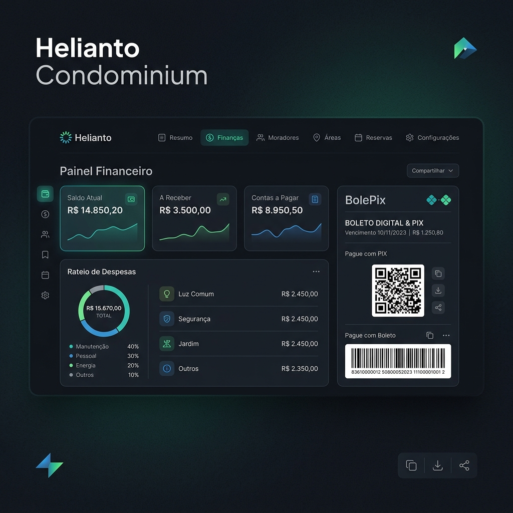

Helianto Condominium: Engenharia de Elite e Soberania de Dados na Reconstrução do SaaS Condominial
O que propomos construir: um sistema de administração de condomínios que respeita a complexidade jurídica e a necessidade de escala. Em vez de telas lentas e pesadas, entregamos uma interface mobile-first responsiva integrada a um motor financeiro rígido que calcula rateios dinâmicos (fração ideal ou igualitário), fundos segmentados e emite cobranças híbridas com Pix instantâneo (BolePix). Tudo isso, sem telas lentas. Sem burocracia. Sem surpresas no fechamento do mês. O ecossistema roda de forma auditada, higienizada nos moldes da LGPD e transparente para inquilinos e proprietários.
- A oportunidade — a saturação de sistemas legados no mercado condominial
- O cérebro do Helianto Condominium — regras de negócio rígidas e automatizadas
- Stack moderna e resiliência — Java 25, Spring Boot 4 e PostgreSQL multi-tenant
- A experiência do morador — autonomia, privacidade e o trunfo do BolePix
- Por que isso é raro no mercado? — o diferencial competitivo da soberania de dados
- A visão Cara Core — soberania de dados como valor inegociável do produto
A oportunidade: por que construir mais um SaaS para condomínios?
O mercado imobiliário e de gestão condominial no Brasil é gigantesco, mas dominado por dinossauros tecnológicos. Softwares legados que parecem construídos no início do século exigem meses de treinamento, cobram taxas abusivas por boleto emitido e tratam a segurança e a LGPD como uma nota de rodapé esquecida.
Mas o que realmente acontece quando um condomínio depende de sistemas obsoletos? E como isso afeta o caixa, a segurança e a confiança dos moradores?
Imagine um síndico recebendo três versões diferentes do mesmo relatório financeiro — e nenhuma bate com o extrato bancário. Isso acontece todos os dias. CTOs e administradoras lidam constantemente com relatórios inconsistentes, falhas de sincronização bancária e sistemas sem isolamento de banco adequado, abrindo brechas para vazamentos catastróficos de dados.
O Helianto Condominium foi projetado a partir de uma folha em branco para resolver esse gargalo. Ele não compete como mais uma planilha glorificada na nuvem, mas como uma infraestrutura de engenharia robusta capaz de lidar com condomínios de grande porte (até 10.000 unidades por organização) operando com latência mínima e segurança corporativa.
O cérebro do sistema: regras de negócio que blindam a gestão
A credibilidade de uma administradora de condomínios depende da precisão de seus cálculos. Pequenos desvios em rateios geram desconfiança imediata. No Helianto Condominium, as regras de negócio cruciais foram codificadas na camada de serviço com rigor acadêmico:
- Rateio Flexível: Suporta o cálculo da taxa condominial tanto por fração ideal (apartamentos maiores pagam proporcionalmente mais) quanto por divisão igualitária de despesas acumuladas.
- Régua de Cobrança com Penalidades Reais: Executa o cálculo automático de multa fixa de 2% e juros de 1% ao mês pro rata die, em conformidade com o Código Civil brasileiro para boletos vencidos.
- Separação Rígida de Fundos: Diferenciação contábil clara entre despesas ordinárias (limpeza, água, manutenção) e extraordinárias (fundos de obras e fundo de reserva). Isso garante a transparência exigida pela Lei do Inquilinato (distinguindo o que é de responsabilidade do inquilino vs. proprietário).
Em vez de forçar o condomínio a contratar gateways caros com taxas fixas elevadas, o Helianto Condominium permite a configuração de contas bancárias diretas via API e integra o BolePix. O morador paga instantaneamente via QR Code Pix ou código de barras tradicional, acelerando a liquidação de caixa de dias para segundos, reduzindo custos de transação para a administradora.
Por baixo do capô: Java 25, Spring Boot 4 e Isolamento Tenant
Muis novos SaaS pecam ao escolher stacks instáveis com a promessa de velocidade de entrega. Na Cara Core, escolhemos estabilidade de longo prazo. O Helianto Condominium foi construído usando:
- Java 25 (LTS) e Spring Boot 4.0.6: Garantindo estabilidade por mais de uma década, segurança de nível enterprise e atualizações previsíveis.
- PostgreSQL com Isolamento Multi-Tenant Real: Separação hermética de dados por organização.
Cada requisição HTTP enviada pela interface do front-end carrega um token JWT contendo a chave do inquilino (`tenant_id`). Nosso back-end intercepta e injeta esse contexto em todas as queries e escritas de banco. Isso estabelece uma barreira intransponível: dados de moradores, boletos e finanças de um condomínio estão matematicamente isolados de terceiros, uma exigência crítica de conformidade com a LGPD.
Além disso, implementamos o **LogSanitizer**. Poucos sistemas no mercado higienizam logs em tempo real. O Helianto Condominium faz isso automaticamente — e sem custo de performance. Números de telefone são mascarados, CPFs/CNPJs são omitidos e o IP de cada requisição é criptografado em hash de forma irreversível antes de tocar o disco.
Notificações e experiência do morador: automação pragmática
A autonomia do usuário final (morador) é o que garante a aceitação do software. O portal do morador do Helianto Condominium foca em simplicidade mobile-first: acesso rápido a segunda via, cópia do código Pix copia-e-cola e transparência financeira em tempo real (gráficos intuitivos de receitas vs. despesas do condomínio).
Para o combate à inadimplência — a maior dor de qualquer síndico —, implementamos a **Régua de Notificação Automática**:
- D-3: Lembrete amigável (valor e linha digitável)
- D-0: Alerta no dia com Pix copia-e-cola imediato
- D+3: Cálculo automático de multa e juros pro rata die no payload
Por que isso é raro no mercado?
Enquanto a maioria das soluções empurra contratos de fidelidade longos e aprisiona os dados em nuvens proprietárias difíceis de auditar, o Helianto Condominium se destaca por diferenciais raros de engenharia e negócios:
- Multi-Tenancy real baseado em Tenant Context: Sem riscos de vazamento cruzado de dados entre condomínios diferentes.
- BolePix Nativo: Liquidação imediata de caixa sem intermediários cobrando taxas abusivas de emissão.
- Deploy Autônomo e Descomplicado: Subida em produção em minutos via templates prontos de Docker Compose, Caddy e Nginx.
- Confiabilidade Comprovada: Cobertura de testes automatizados de 81% assegurada via JaCoCo.
A visão Cara Core: soberania de dados como produto
Em consonância com a estratégia B2B pragmática da Cara Core, o Helianto Condominium não aprisiona o cliente. Nós defendemos a soberania de dados: a administradora é proprietária legítima do banco e do código rodando em sua infraestrutura (seja em VPS local, AWS ou GCP).
Nossos templates de deploy prontos para produção asseguram que subir e gerenciar a aplicação exija minutos, não meses de setup de infraestrutura complexa. O código é transparente, auditável e altamente testado.
Conclusão
O Helianto Condominium representa a nova era de produtos de engenharia B2B da Cara Core. Mais do que um software de gestão, ele é uma demonstração de que a tecnologia de ponta pode ser aplicada para resolver problemas reais de mercado de forma simples, estável e financeiramente sustentável.
O futuro da gestão condominial não será decidido por quem tem mais telas — mas por quem tem mais engenharia.
Hashtags
Contato
- E-mail: suporte@caracore.com.br
- Site: www.caracore.com.br
- Iniciativa Helianto Condominium: Página de Releases e Deploys
- LinkedIn: Cara Core Informática
Se você administra condomínios e quer testar uma nova geração de software com soberania de dados, fale com a gente.
Ver página de deploy Falar com engenheiros
Artigo publicado em 30 de dezembro de 2026
© 2026 Cara Core Informática. Todos os direitos reservados.